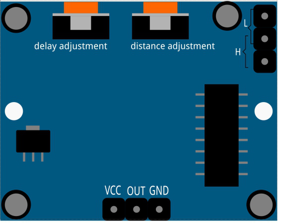

Note
Bonjour, bienvenue dans la communauté Facebook des passionnés de SunFounder Raspberry Pi, Arduino et ESP32 ! Plongez plus profondément dans l’univers du Raspberry Pi, d’Arduino et de l’ESP32 avec d’autres passionnés.
Pourquoi nous rejoindre ?
Support d’experts : Résolvez les problèmes après-vente et les défis techniques avec l’aide de notre communauté et de notre équipe.
Apprendre & Partager : Échangez des astuces et des tutoriels pour améliorer vos compétences.
Aperçus exclusifs : Accédez en avant-première aux annonces de nouveaux produits et aux aperçus.
Réductions spéciales : Profitez de réductions exclusives sur nos produits les plus récents.
Promotions festives et concours : Participez à des concours et promotions pendant les fêtes.
👉 Prêt à explorer et créer avec nous ? Cliquez sur [Ici] et rejoignez-nous dès aujourd’hui !
2.2.4 Capteur PIR
Introduction
Dans ce projet, nous allons fabriquer un dispositif à l’aide de capteurs pyroelectriques infrarouges pour le corps humain. Lorsque quelqu’un s’approche, la LED s’allumera automatiquement. Sinon, la lumière s’éteindra. Ce capteur de mouvement infrarouge est un type de capteur capable de détecter l’infrarouge émis par les humains et les animaux.
Composants

Principe
Le capteur PIR détecte la radiation thermique infrarouge émise par des organismes et peut être utilisé pour détecter la présence d’êtres vivants qui émettent cette radiation.
Le capteur PIR est divisé en deux emplacements reliés à un amplificateur différentiel. Lorsque qu’un objet immobile se trouve devant le capteur, les deux emplacements reçoivent la même quantité de radiation, et la sortie est nulle. Lorsqu’un objet en mouvement passe devant le capteur, l’un des emplacements reçoit plus de radiation que l’autre, provoquant une variation de la sortie en tension. Cette variation est le résultat de la détection du mouvement.

Après le câblage du module, une phase d’initialisation d’une minute commence. Pendant cette phase, le module émettra de 0 à 3 impulsions à intervalles réguliers. Ensuite, le module passe en mode veille. Veillez à éloigner les sources lumineuses et autres interférences de la surface du module pour éviter les erreurs causées par des signaux parasites. Il est préférable d’utiliser le module dans un environnement sans trop de vent, car cela peut aussi affecter le capteur.
{kind=link}
Réglage de la distance
En tournant le bouton du potentiomètre de réglage de la distance dans le sens des aiguilles d’une montre, la portée de détection augmente, la portée maximale de détection est d’environ 0 à 7 mètres. Si vous tournez le bouton dans le sens inverse, la portée de détection diminue, avec une portée minimale d’environ 0 à 3 mètres.
Réglage du délai
En tournant le bouton du potentiomètre de réglage du délai dans le sens des aiguilles d’une montre, vous pouvez augmenter le délai de détection, qui peut atteindre un maximum de 300 secondes. Inversement, en le tournant dans le sens inverse, vous pouvez réduire le délai avec un minimum de 5 secondes.
Deux modes de déclenchement : (choix du mode via un cavalier).
H : Mode de déclenchement répétitif, après détection d’une présence humaine, le
module émet un signal de niveau haut. Pendant la période de délai suivante, si quelqu’un entre dans la zone de détection, la sortie restera à un niveau haut.
L : Mode de déclenchement non répétitif, émet un signal de niveau haut lorsque la
présence d’une personne est détectée. Après le délai, la sortie revient automatiquement à un niveau bas.
Schéma de câblage

Procédures expérimentales
Étape 1 : Construisez le circuit.

Pour les utilisateurs de langage C
Étape 2 : Allez dans le dossier du code.
cd ~/davinci-kit-for-raspberry-pi/c/2.2.4/
Étape 3 : Compilez le code.
gcc 2.2.4_PIR.c -lwiringPi
Étape 4 : Exécutez le fichier exécutable.
sudo ./a.out
Après exécution du code, le PIR détecte les mouvements et fait briller la LED RGB en jaune s’il détecte quelqu’un qui passe. Il y a deux potentiomètres sur le module PIR : l’un pour régler la sensibilité et l’autre pour ajuster la distance de détection. Pour optimiser le fonctionnement du module PIR, tournez-les tous les deux dans le sens inverse des aiguilles d’une montre jusqu’à la butée.

Note
- Si cela ne fonctionne pas après l’exécution, ou si une erreur apparaît: "wiringPi.h:
Aucun fichier ou répertoire de ce type », veuillez vous référer à C code is not working?.
Code
#include <wiringPi.h>
#include <softPwm.h>
#include <stdio.h>
#define uchar unsigned char
#define pirPin 0 // le capteur PIR est connecté au GPIO0
#define redPin 1
#define greenPin 2
#define bluePin 3
void ledInit(void){
softPwmCreate(redPin, 0, 100);
softPwmCreate(greenPin,0, 100);
softPwmCreate(bluePin, 0, 100);
}
void ledColorSet(uchar r_val, uchar g_val, uchar b_val){
softPwmWrite(redPin, r_val);
softPwmWrite(greenPin, g_val);
softPwmWrite(bluePin, b_val);
}
int main(void)
{
int pir_val;
if(wiringPiSetup() == -1){ // Si l'initialisation de wiringPi échoue, affiche un message
printf("setup wiringPi failed !");
return 1;
}
ledInit();
pinMode(pirPin, INPUT);
while(1){
pir_val = digitalRead(pirPin);
if(pir_val== 1){ // si la lecture du PIR est de niveau haut
ledColorSet(0xff,0xff,0x00); // Allume la LED en jaune
}
else {
ledColorSet(0x00,0x00,0xff); // Allume la LED en bleu
}
}
return 0;
}
Explication du code
void ledInit(void);
void ledColorSet(uchar r_val, uchar g_val, uchar b_val);
Ces fonctions sont utilisées pour définir la couleur de la LED RGB. Veuillez vous référer à la section 1.1.2 RGB LED pour plus de détails.
int main(void)
{
int pir_val;
//……
pinMode(pirPin, INPUT);
while(1){
pir_val = digitalRead(pirPin);
if(pir_val== 1){ // si la lecture du PIR est de niveau haut
ledColorSet(0xff,0xff,0x00); // Allume la LED en jaune
}
else {
ledColorSet(0x00,0x00,0xff); // Allume la LED en bleu
}
}
return 0;
}
Lorsque le capteur PIR détecte un spectre infrarouge humain, la LED RGB s’allume en jaune ; sinon, elle s’allume en bleu.
Pour les utilisateurs de Python
Étape 2 : Allez dans le dossier du code.
cd ~/davinci-kit-for-raspberry-pi/python/
Étape 3 : Exécutez le fichier exécutable.
sudo python3 2.2.4_PIR.py
Après l’exécution du code, le capteur PIR détecte les mouvements et fait briller la LED RGB en jaune lorsqu’il détecte quelqu’un. Il y a deux potentiomètres sur le module PIR : l’un pour ajuster la sensibilité et l’autre pour régler la distance de détection. Pour un meilleur fonctionnement du module PIR, tournez-les tous les deux dans le sens inverse des aiguilles d’une montre jusqu’à la fin.
Code .. note:
Vous pouvez **Modifier/Réinitialiser/Copier/Exécuter/Arrêter** le code ci-dessous. Mais avant cela, vous devez vous rendre dans le répertoire source du code, tel que ``davinci-kit-for-raspberry-pi/python``.
import RPi.GPIO as GPIO
import time
rgbPins = {'Red':18, 'Green':27, 'Blue':22}
pirPin = 17 # le pir est connecté à la broche 17
def setup():
global p_R, p_G, p_B
GPIO.setmode(GPIO.BCM) # Configuration du mode GPIO en numérotation BCM
GPIO.setup(pirPin, GPIO.IN) # Configuration de pirPin en entrée
# Configuration des broches LED en sortie et initialisation à un niveau haut (3,3v)
for i in rgbPins:
GPIO.setup(rgbPins[i], GPIO.OUT, initial=GPIO.HIGH)
# Configuration de la PWM pour chaque LED avec une fréquence de 2 kHz
p_R = GPIO.PWM(rgbPins['Red'], 2000)
p_G = GPIO.PWM(rgbPins['Green'], 2000)
p_B = GPIO.PWM(rgbPins['Blue'], 2000)
# Initialisation des PWM à 0
p_R.start(0)
p_G.start(0)
p_B.start(0)
# Définition d'une fonction MAP pour convertir les valeurs de 0~255 à 0~100
def MAP(x, in_min, in_max, out_min, out_max):
return (x - in_min) * (out_max - out_min) / (in_max - in_min) + out_min
# Définition d'une fonction pour régler les couleurs
def setColor(color):
# Configure la luminance des trois LEDs en fonction de la valeur de couleur
# Extraction des valeurs RVB de la variable 'color'
R_val = (color & 0xFF0000) >> 16
G_val = (color & 0x00FF00) >> 8
B_val = (color & 0x0000FF)
# Conversion des valeurs de 0~255 à 0~100
R_val = MAP(R_val, 0, 255, 0, 100)
G_val = MAP(G_val, 0, 255, 0, 100)
B_val = MAP(B_val, 0, 255, 0, 100)
# Modification du cycle de fonctionnement de la PWM en fonction de la luminance calculée
p_R.ChangeDutyCycle(R_val)
p_G.ChangeDutyCycle(G_val)
p_B.ChangeDutyCycle(B_val)
def loop():
while True:
pir_val = GPIO.input(pirPin)
if pir_val == GPIO.HIGH:
setColor(0xFFFF00) # Couleur jaune si mouvement détecté
else :
setColor(0x0000FF) # Couleur bleue sinon
def destroy():
p_R.stop()
p_G.stop()
p_B.stop()
GPIO.cleanup() # Libération des ressources
if __name__ == '__main__': # Programme principal
setup()
try:
loop()
except KeyboardInterrupt: # Exécution de la fonction destroy en cas d'interruption
destroy()
Explication du code
rgbPins = {'Red':18, 'Green':27, 'Blue':22}
def setup():
global p_R, p_G, p_B
GPIO.setmode(GPIO.BCM)
# …
for i in rgbPins:
GPIO.setup(rgbPins[i], GPIO.OUT, initial=GPIO.HIGH)
p_R = GPIO.PWM(rgbPins['Red'], 2000)
p_G = GPIO.PWM(rgbPins['Green'], 2000)
p_B = GPIO.PWM(rgbPins['Blue'], 2000)
p_R.start(0)
p_G.start(0)
p_B.start(0)
def MAP(x, in_min, in_max, out_min, out_max):
return (x - in_min) * (out_max - out_min) / (in_max - in_min) + out_min
def setColor(color):
...
Ces lignes de code sont utilisées pour régler la couleur de la LED RVB, veuillez consulter 1.1.2 LED RVB pour plus de détails.
def loop():
while True:
pir_val = GPIO.input(pirPin)
if pir_val==GPIO.HIGH:
setColor(0xFFFF00)
else :
setColor(0x0000FF)
Lorsque le PIR détecte le spectre infrarouge d’un humain, la LED RVB émet une lumière jaune ; sinon, elle émet une lumière bleue.
Image du phénomène